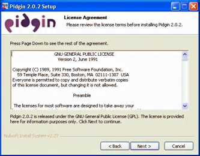
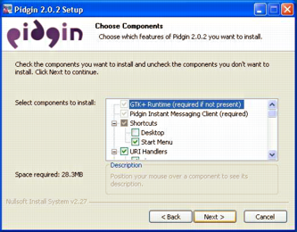

2.1. What is Pidgin¶
Pidgin is an Instant Messaging Client for Windows & Linux. Pidgin now supports Google Talk, MSN, ICQ, QQ, Yahoo! Messenger, Jabber/XMPP and many more.
2.2. Where can I download it?¶
If you are a Linux user, from here: http://www.pidgin.im/download/source/ (Besides the source code, packages are also available for CentOS and Fedora, though).
If you are a Windows user, from here: http://www.pidgin.im/download/windows/
2.3. How can I install it?¶
- Double-click the Pidgin installation file. Windows warns you that the publisher cannot be verified. Since this file is from Fermilab support, click Run to allow the installation.

- Choose the language that you wish to use with Pidgin and click OK.

- The setup wizard starts. Click Next to continue.

- Read the Pidgin license agreement (GPL2), and if you agree, click Next.

- Select the components that you wish to install and click Next. The default selections should be fine.

- In the Destination Folder box, type the directory you wish to use for Pidgin. We recommend installing Pidgin in C:Program FilesPidgin.

- The Pidgin installation will begin. When the installation is complete, click Next to continue, then click Finish to run Pidgin and complete the configuration.

- Click Add to add your chat accounts to your configuration.

2.4. How do I add my account?¶
- In the Pidgin Login Screen, click Accounts, then click Add. The Add Account dialog appears.

- Type your CERN username into the Username box, which is the part that goes before @cern.ch
- Type jabber.cern.ch into the Domain box.
- Type the name you want to give this account in the Resource box. For example, Work or CERN.
- Type your NICE password into the Password box. DO NOT check Remember password, since it will be saved in plain text and it could cause a security problem.
- Click the Advanced tab.

- Make sure that the port selected is the 5222 and that Require SSL/TLS is enabled.
2.5. How do I enter into a chat room?¶
- Click in Join a chat

- Insert the name of the chat room, the server (conference.jabber.cern.ch), the nickname that you will use and, in case the room is protected, the chat room’s password.